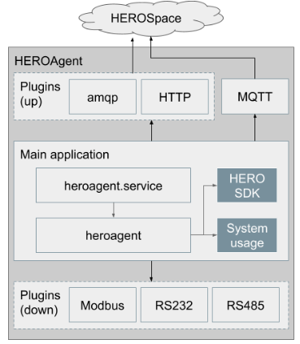

HEROAgent(HERO SDK standard ver)¶
Introduction¶
An agent service for monitoring system usage, board information and external sensor data (such as cpu usage, fan speed), connecting those data to HEROSpace in linux based operating system. The system data is reorganized in json format and HEROAgent is communicate with HEROSpace based on MQTT protocol. With this agent, user can easily monitoring device hw and system status on network anytime, anywhere.
Architecture¶
HEROAgent includes two parts. One is the main part for collecting basic board data, data uploading and service control. The Sencond part is plugin configuration for other uploading protocol and external sensor data collection.
- Main Application
Data collecting : board hw information from HEROSDK (voltage, cpu temperature, … ) and system usage
Configuration : data updating frequency
System manager : system controlled by linux systemd
Data updating : by MQTT protocol
Device registering : board need to register to server first for device management on server
Plugin : addictional data uploading protocol and external sensor data collecting
Plugins
Plugin |
Description |
|---|---|
HTTP |
Data uploading thourgh http |
amqp |
Data uploading thourgh amqp protocol |
RS232/RS485 |
Collecting external sensor data through RS232/RS485 |
Modbus |
Collecting external sensor data throught modbus protocol |